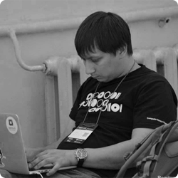
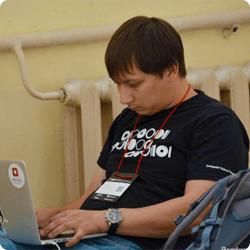

КОНФЕРЕНЦИЯ
ДЛЯ WEB-РАЗРАБОТЧИКОВ
В БУКОВЕЛЕ
ДО КОНФЕРЕНЦИИ ОСТАЛОСЬ
00
:
00
:
00
:
00
дней
часов
минут
секунд
МЕСТО ПРОВЕДЕНИЯ
Развлекательный центр
"Бука"
ТК 'Буковель', Паляница,
Ивано-Франковская обл
Как добраться
-

- НА ПОЕЗДЕ
- Ехать до городов: Ивано-Франковск, Львов, Тернополь или Черновцы
-
- НА САМОЛЕТЕ
- Лететь во Львов LWO либо Ивано-Франковск IFO
-

- НА АВТОБУСЕ
- Ивано-Франковск - ТК "Буковель" - 110 км
- Львов - ТК "Буковель" - 245 км
- Тернополь - ТК "Буковель" - 250 км
- Черновцы - ТК "Буковель" - 160 км
-

- НА МАШИНЕ
- Из других городов (кроме Черновцов и Ужгорода) ехать через
Ивано-Франковск, до ТК "Буковель" (110 км) через города
Надворная, Яремче, села Мыкулычин и Татаров.
GPS
48.346438
24.445438
Внимание! Сверьте указаны координаты с теми которые выбрал ваш навигатор.
В Ивано-Франковской области два населенных пункта с названием Поляница (Паляница).
ДОКЛАДЧИКИ

ВЛАДИМИР МЕЛЬНИК
Domain-Driven Development & Domain-Specific Languages in RubyРасскажу о том, что такое DDD, почему этот подход хорош и какие сложности возникают с его внедрением. Расскажу пару примеров из жизни. Также расскажу о некоторых приемах разработки DSL на руби и зачем вообще необходима разработка DSL и как DSL соотносятся с DDD.


ВЛАДИМИР ГОЦЫК
Getting maximum of Python, Django with Postgres 9.4Postgres предоставляет много встроенных возможностей для создания эфективных приложений, использующих базы данных. А в версии 9.4 появляется еще и JSONB поле, при правильном использовании которого, отпадает необходимость использвания NoSQL баз данных. В докладе рассмотрим, как использовать этот потенциал по максимуму в своих Python/Django приложениях.

Меляницький Владислав
Rapid API Development in RubyБуду сравнивать популярные gem'ы для создания и документирования API. Поделюсь наработаными решениями для быстрой и приятной разработки. Можно слушать любому уровню

Константин Лещенко
Екосистема pythonЦя доповідь про екосистему Python для новачків і людей, які прийшли з інших мов.

Артем Тритяк
Node.js для Front-End разработчиковЭтот доклад о модульных приложениях на Node / Express для начинающих.

Александр Лябах
Как программисту перестать программировать + бонусный трек от CheckiOДля многих разработчиков стать на определенном этапе Менеджером Проекта это вполне ожидаемый карьерный рост, но по статистике из программистов не лучшие ПМы. Обыдно, да?

Сергій Пчелінцев
RSpec - как писать минимальный набор тестов для покрытия максимум функционалаБудет рассмотренны случаи из реальных rails приложений и преимущества, которые предоставляет RSpec по сравнению с другими решениями.

Олександр Труш
Почему пещера с драгоценными камнями лучше змеиного логоваСравнение полезности Rails/Django для стартапов

Алексей Радченко
Автоматическая проверка кода студента в онлайн курсах на платформе Open edXOpen edX - это платформа позволяющая создавать и проходить массовые онлайн курсы. Среди популярных курсов много курсов по программированию на питоне. В докладе будет показано, как организовать автоматическкую проверку программ студента.


Никита Семенистый
Поиск зрелых решений на node.jsВзгляд на тенденцию атомарности в node.js модулях и ее последствия для экосистемы в целом. Можно слушать без проблем любому уровню, самым крутым будет чуть менее интересно (а может и нет)

Артем Шубович
Як нагодувати леммінгівУявіть собі купу зв’язаних даних, які постійно приходять до вас на сервер; і Ваша задача - зберегти всі дані і дати якомога швидший доступ до них великій кількості користувачів. Даний доклад розповість, які є неординарні способи зробити це

Сергій Дем'янчук
Concurrency in Ruby"Игра в многопоточность" в Ruby на примере Threads, Fibers, Actors и Celluloid gem. Для продвинутых пользователей.

Максим Харандзюк
Everything You Always Wanted to Know About BDDКак сделать из "базворда" инструмент


Иван Колодяжный
Python packages: eggs, wheels and rpm's(deb's)ПАРТНЕРЫ


ОРГАНИЗАТОРЫ


АРТЕМ ТРИТЯК
- email art.trityak@gmail.com
- skype art.trityak
- twitter @ArtyomTrityak


ЮЛИЯ ЧЕРНЯК
- email julia.cherniak@gmail.com
- skype cherni44ka
- phone +38 050 373 14 65
Программируй, катай, общайся!